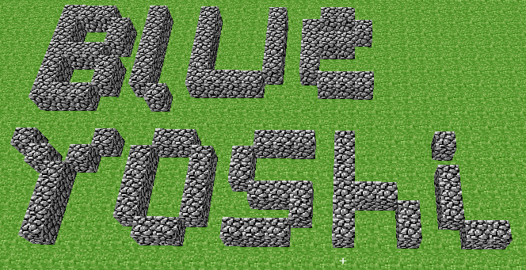
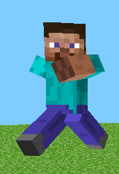
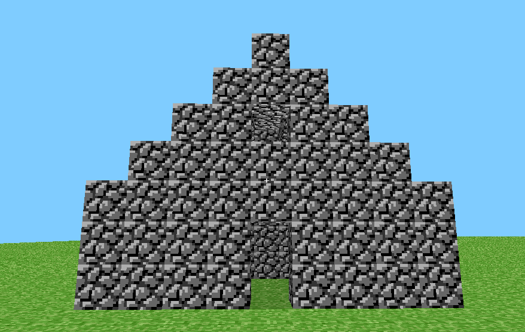
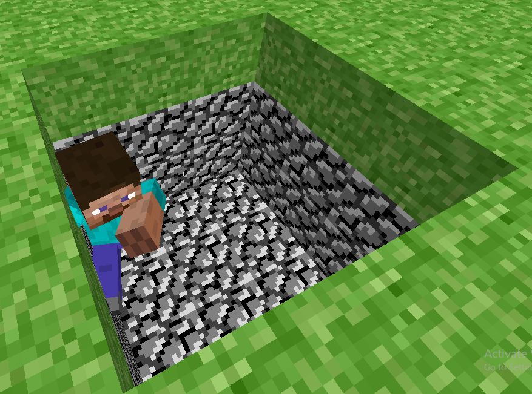

By BlueYoshi
Notes:
This is not a perfect port, some features are missing
The game automatically loads your last save when reloading
When loading, the chunks can take a while to generate
FPS drops when looking at large amount of mobs
Controls:
WASD or Arrow Keys - Move
Space - Jump
Move Mouse - Look
Left Click - Place Block
Right Click - Break Block
R - Reset Position (warning! very fast)
Enter - Save level to browser
Images:



